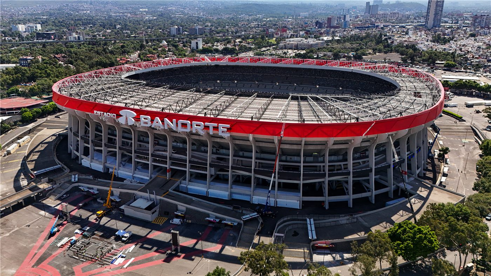
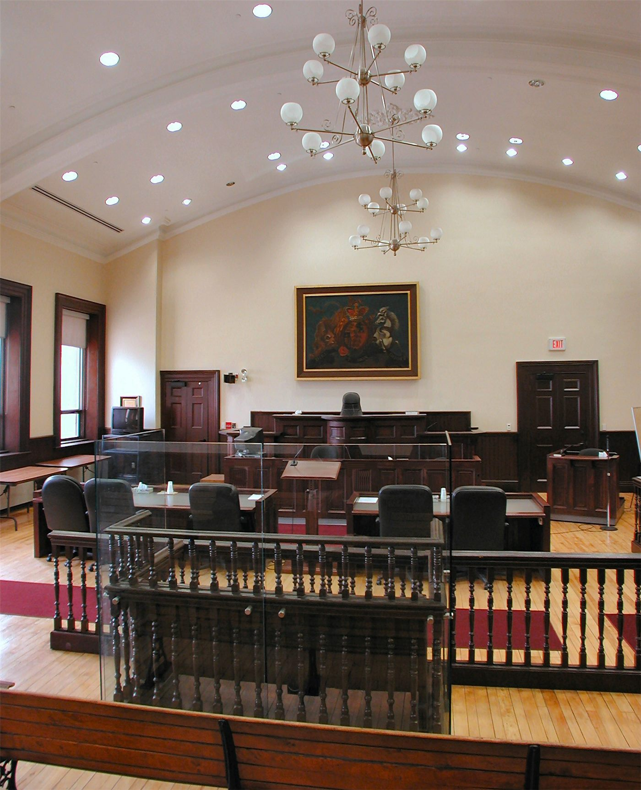

橋한국
한국이재명 정부 2년차, 728조 예산 'AI 대전환'에 건다
정부가 2026년을 'AI 대전환 원년'으로 선포하고 728조 원 슈퍼 확장 재정을 편성했다. AI 3대 강국 도약이 목표지만, 고환율·재정건전성 논쟁이 동시에 불붙는다.
정부가 2026년을 'AI 대전환 원년'으로 선포하고 728조 원 슈퍼 확장 재정을 편성했다. AI 3대 강국 도약이 목표지만, 고환율·재정건전성 논쟁이 동시에 불붙는다.
대통령 선거 정확히 1년 만에 치러진 전국 단위 선거. 지역 권력 지형과 국정 동력에 영향.

올해 1월 한중 정상회담으로 양국 관계가 9년 만에 정상 궤도에 올랐다. 경제·외교안보 대화 채널이 복원되고, 인적·문화 교류가 확대된다.

더불어민주당이 국회 원 구성에 속도를 내고 있다. 당 안팎에서 '필요시 모든 상임위원장을 맡는 결단'까지 거론되며 협상 압박이 커지고 있다.

이재명 대통령이 선거관리위원회와 관련해 투표용지 문제를 넘어 부정부패 전반을 수사하라고 지시했다.

코스피가 9000선에 올랐지만 청년층의 상대적 박탈감이 화두로 떠올랐다. 이재명 대통령은 '청년 소외감을 뼈아프게 받아들여야 한다'고 말했다.
국내 자영업자 3명 중 1명이 사실상 최저임금에도 못 미치는 소득을 올리고 있다는 조사 결과가 나왔다. 내수 부진과 비용 상승이 겹친 결과로 풀이된다.

한국 증시의 거래·결제 제도가 바뀐다. 결제가 익일로 단축되고, 9월부터 오후 4~8시 애프터마켓이 신설된다.

법원이 김건희 씨 관련 '매관매직' 의혹 사건의 선고 재판을 생중계하기로 결정했다. 사회적 관심이 큰 사건의 공개성을 높이려는 취지다.
인요한 전 국민의힘 의원의 대한적십자사 회장 임명을 두고 정치권 공방이 일고 있다. 인사의 적절성을 둘러싼 해석이 엇갈린다.
최태원 SK 회장이 인공지능 시대에는 인재의 기준도 바뀐다며, AI와의 협력·활용 능력을 강조했다.

2026 부산모빌리티쇼가 오는 27일 막을 올린다. 미래 모빌리티 기술과 신차가 한자리에 모이는 국내 대표 전시다.

이재명 대통령이 여성 소방관이 회식 자리 갑질 끝에 숨진 사건을 두고 '상사들이 노리개 취급한 최악의 갑질'이라고 강하게 비판했다.

중국 외교부, EU와의 경제·통상 관계는 상호이익이라며 보호무역 자제 촉구.
왕이 외교부장, 글로벌 거버넌스 개혁 방향 제시. 중국, 7월 세계 AI 회의 개최 예정.

상무부 집계, 서비스 교역 확대 지속. 디지털·관광·운송이 견인.

수출 증가폭이 둔화되며 흑자가 축소됐다. 대외 수요 약화 신호로 읽힌다.

중국에서 제4회 국제공급망촉진박람회가 개막했다. 6대 산업망을 중심으로 글로벌 기업들이 참가해 공급망 협력을 모색하는 자리다.
중국 황하에서 본격적인 홍수기를 앞두고 물과 모래를 조절하는 '조수조사' 작업이 시작됐다. 하천 안전과 토사 관리를 위한 정례 조치다.

남중국해의 노을과 바다 풍경을 담은 화보가 공개됐다. 해양의 자연 풍광과 그 위에서 살아가는 사람들의 일상을 조명한다.
중국과 유럽의 관계는 상호 필요에 바탕을 둔다는 진단이 나왔다. 경쟁과 협력이 교차하는 가운데 실용적 접점을 찾으려는 흐름이 읽힌다.

세계 질서의 운영 방식, 곧 글로벌 거버넌스를 어떻게 개혁할지를 둘러싼 논의가 확산되고 있다. 폭넓은 합의를 어떻게 모을지가 핵심 과제로 떠오른다.

인공지능의 위험을 통제하지 못해 큰 사고가 벌어지는 'AI의 체르노빌 순간'을 함께 막아야 한다는 안전 협력론이 제기됐다.
공급망 박람회 현장에서 '디지털·스마트 기술망'이 특히 주목받았다. 6대 산업망이 보여주는 협력의 매력을 짚는다.
전쟁과 분쟁이 줄어들 때 세계가 누리는 '평화의 배당'을 어떻게 지속할 수 있을지에 대한 논의가 제기됐다.
중국의 과학연구 성과가 여러 지표에서 상위권을 유지하고 있다는 평가가 나왔다. 양적 성장 다음의 질적 도약이 과제로 제시된다.
대만 동부 해역에서의 해양조사를 둘러싸고 양안이 신경전을 벌였다. 중국과 대만 양측의 입장을 균형 있게 전한다.

취임 2년을 맞은 라이칭더 총통이 평화·안정과 민생을 국정 기조로 제시했다. 대만은 인재 유치 제도를 본격 시행 중이다.
해외 화인 청년의 취업·정착 문이 넓어졌다. 졸업생은 허가 없이 2년 근무, 전문인력은 1년 거주 후 영주 신청.

대만 반도체 설계기업 미디어텍이 제품 가격 조정 통지를 내보내자 개장 초 주가가 큰 폭으로 올랐다.

세계 최대 파운드리 TSMC가 사상 최고가를 기록하며 대만 증시를 끌어올렸다. AI 반도체 수요가 상승의 동력으로 꼽힌다.

전력반도체(功率元件) 관련 종목이 강세를 보이며 대만 증시에서 사상 최고가를 기록했다. 전동화·AI 인프라 수요가 배경이다.

대만 행정원이 조직범죄와 마약을 겨냥한 '打黑反毒(폭력·마약 단속) 소조'를 출범시켰다. 4중 방어선으로 단속을 강화한다는 방침이다.

대만 국민당의 신주시(新竹市) 시의원 공천을 둘러싸고 논란이 일었다. 등록한 후보가 공천을 받지 못하고, 등록하지 않은 인사를 징소(徵召)하는 방식이 도마에 올랐다.

대만 국군이 '즉시 전비' 태세를 점검하는 훈련을 이어갔다. 훈련 중 주변 해·공역의 군사 활동을 탐지했다고 밝혔다.

대만에서 시가총액형 상장지수펀드(ETF)에 어떤 종목을 더할지를 둘러싼 투자 논의가 활발하다. 분산과 집중 사이의 균형이 화두다.

대만 신주의 한 대형 병원이 '세계 이야기집' 프로그램으로 국제 대훈(代訓) 의사를 맞이하며 백색 거탑 안에서 다국적 문화 교류를 펼쳤다.
대만 철도(台鐵) 일부 열차에 '냉방비'가 포함돼 있어, 특정 조건을 충족하면 환불을 신청할 수 있다는 사실이 누리꾼 사이에서 화제가 됐다.

대만 가오슝시가 버려진 폐어망을 회수해 오면 상품권으로 교환해 주는 제도를 운영한다. 신청 시 세 가지 규정을 유의해야 한다.
백악관이 국가정보국장 대행을 새로 지명하고, 법무부는 일부 정책 방향을 정리했다. 대외·통상 변수도 화인 경제에 파급.

EU 지도자들이 우크라이나 지원, 2028~2034 예산, 방위·이민을 의제로 올렸다. 올해 회원국 8곳이 총선을 치른다.

7일간 본토·카나리아 제도 순방.

그레이트니코바르 섬 항만·공항·신도시 계획.

미국이 이란산 석유의 달러 결제와 미국 내 판매를 허용하는 대폭적인 제재 완화 조치를 내놨다. 스위스 고위급 회담의 후속으로 풀이되며, 국제 유가와 중동 정세에 큰 변수가 될 전망이다.

월드컵 경기장에서 트럼프 미국 대통령을 겨냥한 구호가 빠르게 번지며 백악관 참모진이 대응에 부심하고 있다고 외신이 전했다.

리오넬 메시가 월드컵 최다 경기·최다 골·최다 승 기록을 한꺼번에 갈아치우며 대회의 역사를 새로 썼다.

일본 엔화가 40년래 최저 수준에 근접하면서 미일 재무장관이 긴급 화상회의를 가진 것으로 전해졌다. 외환시장은 당국 개입 가능성에 촉각을 세우고 있다.

트럼프 미국 대통령이 양자컴퓨터 육성을 위한 행정명령에 서명하며 차세대 기술 패권 경쟁에 박차를 가했다.
민간 우주기업 스페이스X의 기업가치가 세 차례 연속 하락하며 시가총액이 6000억 달러가량 줄었다고 외신이 전했다.

국제유가가 중동 긴장에도 크게 튀지 않은 배경으로 특정 산유국의 증산이 지목됐다. 호르무즈 해협이 재개되면 이르면 7월 공급 과잉이 나타날 수 있다는 분석이다.

프랑스 전역 절반 이상의 지역에 폭염 적색경보가 내려졌다. 마크롱 대통령은 국민에게 건강 관리에 각별히 유의할 것을 당부했다.
주요 7개국(G7) 정상회의에서 중국 변수가 핵심 의제로 떠올랐다. 외교 수사에서 경계로, 지난 10년간 G7의 대중 전략 변화를 짚는다.
북한 김정은 국무위원장이 당 전원회의에서 핵무력 강화를 강조하며 핵보유국 지위를 재확인했다. '반제 연합전선 강화'도 언급했다.
우크라이나의 유럽연합(EU) 가입 협상이 공식 개시됐다. 전후 재건과 유럽 통합의 새 국면을 알리는 상징적 절차로 평가된다.
미국 우주군이 민간 발사체를 활용한 '즉시전비' 훈련에서 17시간 내 로켓을 발사하는 신기록을 세웠다고 외신이 전했다.

중국과의 관계가 수년째 경색된 리투아니아의 경제·외교적 득실을 짚는 분석이 나왔다. 소국 외교의 딜레마를 보여주는 사례로 거론된다.

중국이 미국 기업 수십 곳을 겨냥한 반격 조치를 발표했다. '역외에서의 무장 대만독립 지원 차단'을 명분으로 내세웠다.
미국 축구대표팀의 핵심 크리스티안 풀리식이 부상에서 회복해 복귀했다. 16강 토너먼트를 앞둔 미국에 호재로 작용하고 있다.

졸업생 취업·영주 경로를 나란히. 화인 독자를 위한 실전 해설.

체류자격·기한·서류는 거주지와 자격별로 다르다. 미리 챙기면 불이익을 피할 수 있다.

인천화교협회가 여권 발급과 각종 인증 수수료의 인상을 예고했다. 행정 비용이 오르면 재한 화교 가정의 실생활 부담으로 직결돼, 미리 일정을 챙기라는 당부가 나온다.

부산화교중학(부산화교중고등학교)이 2026학년도(중화민국 115학년도) 신입생과 편입생 모집 공고를 냈다. 1차 접수는 7월 10일까지, 2차는 8월 10~14일이다.

인천화교 중산중학·소학이 개교 125주년을 맞아 교경(校慶) 행사를 열었다. 한 세기를 넘긴 화교 교육의 전통과 3개 언어·민속 교육의 성과가 한자리에 모였다.

한성화교협회가 봄철 교유대회를 열어 화교 동포 650여 명이 한자리에 모였다. 행사장은 온정과 친목의 열기로 가득했다.

인천화교협회가 영주권(F-5)을 가진 외국인의 체류카드(영주증) 10년 주기 갱신을 안내했다. 유효기간이 다가온 동포는 만료 전 갱신 신청을 해야 불이익을 피할 수 있다.

원·달러 환율이 2009년 이후 최고로 치솟았다. 외국인 자금 이탈이 방아쇠를 당겼고, 본국에 돈을 보내는 화인 가정과 유학생이 가장 먼저 타격을 받는다. 정부는 '즉각 대응'을 예고했다.

달러뿐 아니라 유로 대비 원화도 약세. 유럽발 수입품과 여행 비용이 오른다.
대규모 자금 유출이 환율과 주가를 함께 끌어내렸다.

6월 11일 멕시코시티 개막, 7월 19일까지. 폭염 대비 규정 신설.

안전성·내약성 확인. 문어의 거울 사용도 관찰.

무척추동물의 거울 이용이 관찰돼 인지과학에 새로운 질문을 던졌다.
한국 피아니스트 임윤찬이 독일의 최고 권위 음악상을 받았다. 세계 무대에서 거듭 인정받으며 한국 클래식 음악의 위상을 높였다.
한국 축구의 전설 차범근이 월드컵을 진단했다. 그는 '한국은 8강에 갈 만한 실력이며 손흥민은 여전히 위협적'이라고 평가했다.

일본의 주요 배터리·소재 기업들이 중국·한국 업체에 맞서기 위해 연합을 모색하고 있다는 분석이 나왔다.

과학기술 경쟁이 치열해지면서 연구개발 투자와 인재 양성의 중요성이 부각되고 있다. 숫자 너머의 질적 성장이 화두로 제시된다.
걸그룹 ILLIT가 데뷔 2년간의 정산 금액을 공개하면서, 인기와 실제 수익 사이의 현실이 화제가 됐다.
메이저리그(MLB)에서 활약하는 이호준이 양키스의 에이스 콜을 상대로 안타를 치고 득점하며 투혼을 보였다.

1884년 인천화상조계 이래 140년. 인구는 8만에서 1만으로 줄었지만, 역사·문화 자산과 관광 가치는 오히려 커지고 있다.

첨단 신도시와 근현대 개항장의 공존. 해외 매체도 주목.

이중 언어·문화 강점. 무역·통번역·교육으로.

제주에서 온라인 성매매 사이트를 운영하며 영업한 중국인 일당이 경찰에 적발됐다. 당국은 관련 범죄에 대한 단속을 강화하고 있다.

음주 측정을 방해하는 이른바 '술타기'와 악질적인 불법 추심 행위에 대해 양형 기준이 마련된다. 처벌의 일관성과 예측 가능성을 높이려는 조치다.

부산시가 반려동물과 함께 걷는 산책로 5곳을 조성한다. '해운댕길', '해변댕길' 등 정겨운 이름이 눈길을 끈다.
대만에서 마약 거래 가격을 둘러싼 분쟁이 흉기 사건으로 번졌다. 마약상이 복부를 찔려 위독한 상태에 빠졌고, 경찰은 3시간 만에 가해자를 검거했다.
대만에서 야간에 공사장을 순찰하던 보안요원이 시야가 어두운 상황에서 배수구로 추락해 숨졌다. 야간 작업 환경의 안전 관리가 도마에 올랐다.

대만 화롄의 래프팅 명소 秀姑巒溪(슈구롼시)에 의료 거점이 마련됐다. 부상이나 고립 상황에 신속히 대응하기 위한 안전망이다.